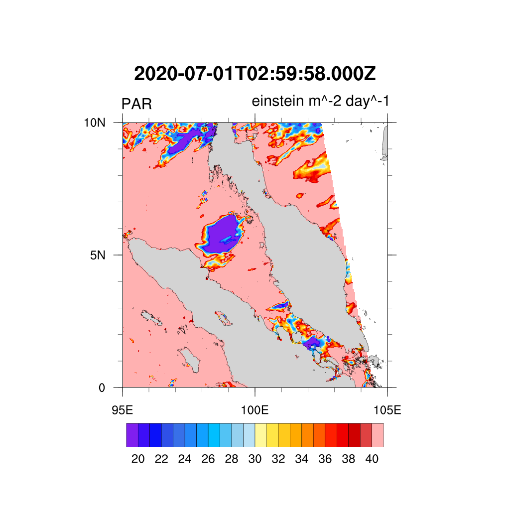

Photosynthetically Available Radiation (PAR)

Satellite Data
For the CEMACS experiment, we developed an automated system to download and process the relevant satellite data as listed below.
Data Specification
| Long Name | Photosynthetically Available Radiation, R.Frouin |
| Variable | Short |
| Latitude | 4320 |
| Longitude | 8640 |
| RGB | 3 |
| 8-bit color | 256 |
| Unit | µg m^-3 |
| Instrument | MODIS |
| Title | HMODISA Level-3 Standard Mapped Image and MODIST Level-3 Standard Mapped Image |
| Platform | Aqua and Terra |
| Temporal Range | Day |
| Map Projection | Equidistant Cylindrical |
| Spatial Resolution | 4.64km |
| Institution | NASA Goddard Space Flight Center, Ocean Ecology Laboratory, Ocean Biology Processing Group |
| Processing Level | L3 Mapped |
| CDM Data Type | Grid |
Satellite Data
For the CEMACS experiment, we developed an automated system to download and process the relevant satellite data as listed below.
- Sea Surface Temperature (SST)
- Remote Sensing Reflectance (RRS)
- Chlorophyll-a
- Photosynthetically Available Radiation (PAR)
- Particulate Organic Compound (POC) and Particulate Inorganic Compound (PIC)